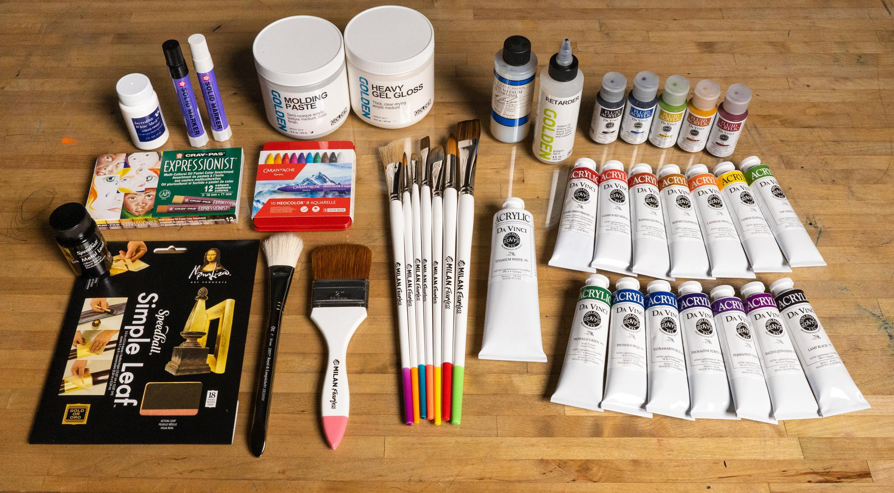

Learn More About Each Medium
Watercolor painting is the use of water-based pigments that create vibrant colors.
This painting style usually results in transparent layers of color, which can be built up
with multiple layers. There are many different techniques when it comes to watercolor painting.
These include wet-on-wet, wet-on-dry, dry brushing, and washes. Here is a description of each technique:
1. Wet-on-wet: is the process of applying paint on an already wet surface. It creates a cool blend of colors.
This process is good for creating a nice flow of colors. However, if not careful, the colors can start to look
muddy.
2. Wet-on-dry: is the process of applying paint on a dry surface. It results in crisp lines and a clean look.
This technique is good for applying details to your painting.
3. Dry-brushing: is the process of using a slightly damp brush dipped in paint to create some rough texture.
This technique is good for adding details with texture.
4. Washes: is the process of applying diluted paint over large areas of your painting. The more diluted,
the more transparent the wash. Results in an even layer of color.

Acrylic painting is the use of a fast-drying paint to create solid layers of color. Like watercolor paint, acrylic paint
can be mixed with water to become more transparent. Acrylic paint is good for painting on different types of surfaces,
such as your regular canvas, wood, cardboard, and even shoes! Different techniques can be used in
acrylic painting. These include layering, dry-brushing, and impasto. Here is a description of each technique:
1. Layering: is the process of building up colors with layers of paint. Acrylic paint is perfect for this because of how
fast it dries. Layering is good for adding depth to pieces and creating value.
2. Dry-brushing: is the process of using a dry brush dipped in paint to create some rough texture.
This technique is good for adding details with texture.
3. Impasto: is the process of applying really thick layers of paint to create a raised textured surface on a canvas.
A quick note - be sure to remember that acrylic paint dries fast. It means you will have to work with speed if blending colors!

Oil painting is the process of using paint that has pigments mixed with a type of oil. Oil paint is a more traditional medium
used by artists all throughout history. This painting style is good for portraits and landscapes. It is because of its blending
capabilities and its slow drying qualities. It allows the painter to layer colors to blend and create smooth transitions.
Artists can use techniques from watercolor and acrylic with oil paint. These include alla prima, glazing and a new one called creating an
underpainting. Here is a description of each technique:
1. Alla prima: this is similar to the wet-on-wet technique from watercolor. It is when the paint is applied to wet paint. It allows
the neat blending of colors. Mixing the paint with linseed oil helps to make the paint a bit runnier.
2. Glazing: is also the same as watercolor, but to create the transparent layer, the painter must mix the oil paint with a paint thinner.
It creates a thin coat of paint.
3. Underpainting: this is the first layer of paint that establishes values and the overall composition of the piece. These are usually done
in neutral colors or colors that will be seen when adding the next layers of colors. The underpainting is similar to a sketch an artist would draw on
the canvas before painting.

Click below for a fun color scheme generator that you can use as inspiration for future projects!